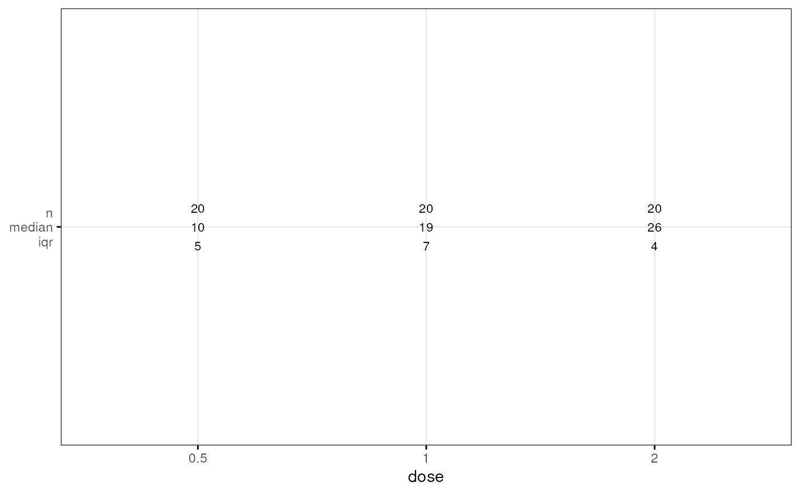
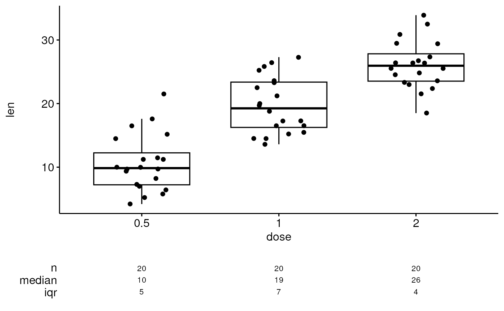
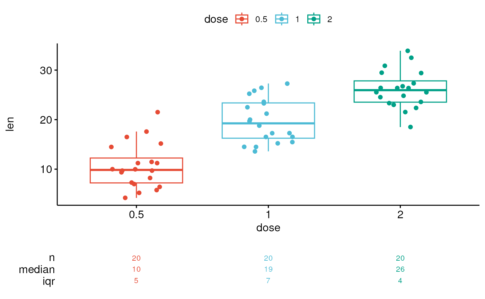
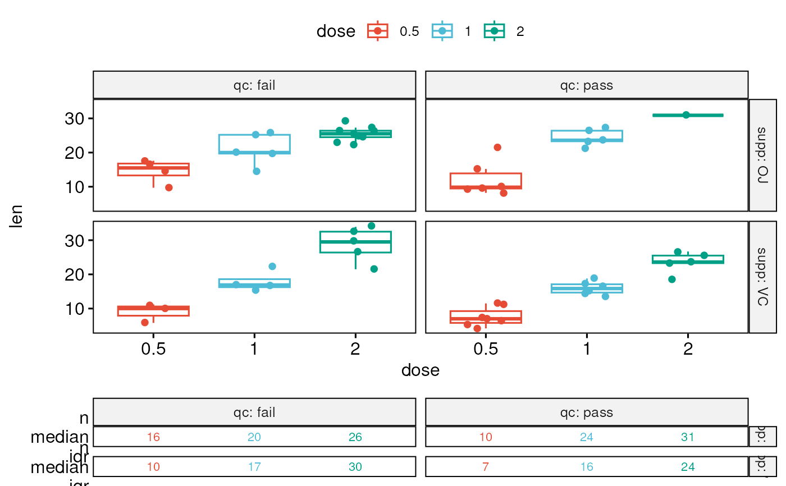
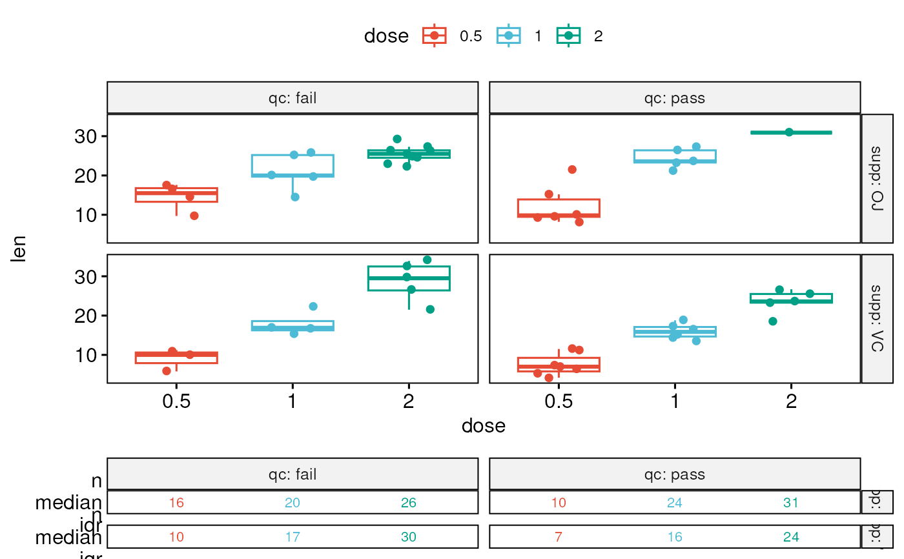

Create a ggplot with summary stats (n, median, mean, iqr) table under the plot. Read more: How to Create a Beautiful Plots in R with Summary Statistics Labels.
ggsummarytable(
data,
x,
y,
digits = 0,
size = 3,
color = "black",
palette = NULL,
facet.by = NULL,
labeller = "label_value",
position = "identity",
ggtheme = theme_pubr(),
...
)
ggsummarystats(
data,
x,
y,
summaries = c("n", "median", "iqr"),
ggfunc = ggboxplot,
color = "black",
fill = "white",
palette = NULL,
facet.by = NULL,
free.panels = FALSE,
labeller = "label_value",
heights = c(0.8, 0.2),
digits = 0,
table.font.size = 3,
ggtheme = theme_pubr(),
...
)
# S3 method for class 'ggsummarystats'
print(x, heights = c(0.8, 0.2), ...)
# S3 method for class 'ggsummarystats_list'
print(x, heights = c(0.8, 0.2), legend = NULL, ...)Arguments
- data
a data frame
- x
a list of
ggsummarystats.- y
character vector containing one or more variables to plot
- digits
integer indicating the number of decimal places (round) to be used.
- size
Numeric value (e.g.: size = 1). change the size of points and outlines.
- color
outline color.
- palette
the color palette to be used for coloring or filling by groups. Allowed values include "grey" for grey color palettes; brewer palettes e.g. "RdBu", "Blues", ...; or custom color palette e.g. c("blue", "red"); and scientific journal palettes from ggsci R package, e.g.: "npg", "aaas", "lancet", "jco", "ucscgb", "uchicago", "simpsons" and "rickandmorty".
- facet.by
character vector, of length 1 or 2, specifying grouping variables for faceting the plot into multiple panels. Should be in the data.
- labeller
Character vector. An alternative to the argument
short.panel.labs. Possible values are one of "label_both" (panel labelled by both grouping variable names and levels) and "label_value" (panel labelled with only grouping levels).- position
Position adjustment, either as a string, or the result of a call to a position adjustment function.
- ggtheme
function, ggplot2 theme name. Default value is theme_pubr(). Allowed values include ggplot2 official themes: theme_gray(), theme_bw(), theme_minimal(), theme_classic(), theme_void(), ....
- ...
other arguments passed to the function
ggpar(),facet()orggarrange()when printing the plot.- summaries
summary stats to display in the table. Possible values are those returned by the function
get_summary_stats(), including:"n", "min", "max", "median", "q1", "q2", "q3", "mad", "mean", "sd", "se", "ci".- ggfunc
a ggpubr function, including: ggboxplot, ggviolin, ggdotplot, ggbarplot, ggline, etc. Can be any other ggplot function that accepts the following arguments
data, x, color, fill, palette, ggtheme, facet.by.- fill
fill color.
- free.panels
logical. If TRUE, create free plot panels when the argument
facet.byis specified.- heights
a numeric vector of length 2, specifying the heights of the main and the summary table, respectively.
- table.font.size
the summary table font size.
- legend
character specifying legend position. Allowed values are one of c("top", "bottom", "left", "right", "none"). To remove the legend use legend = "none".
Functions
ggsummarytable(): Create a table of summary statsggsummarystats(): Create a ggplot with a summary stat table under the plot.
Examples
# Data preparation
#::::::::::::::::::::::::::::::::::::::::::::::::
data("ToothGrowth")
df <- ToothGrowth
df$dose <- as.factor(df$dose)
# Add random QC column
set.seed(123)
qc <- rep(c("pass", "fail"), 30)
df$qc <- as.factor(sample(qc, 60))
# Inspect the data
head(df)
#> len supp dose qc
#> 1 4.2 VC 0.5 pass
#> 2 11.5 VC 0.5 pass
#> 3 7.3 VC 0.5 pass
#> 4 5.8 VC 0.5 fail
#> 5 6.4 VC 0.5 pass
#> 6 10.0 VC 0.5 fail
# Basic summary stats
#::::::::::::::::::::::::::::::::::::::::::::::::
# Compute summary statistics
summary.stats <- df %>%
group_by(dose) %>%
get_summary_stats(type = "common")
summary.stats
#> # A tibble: 3 × 11
#> dose variable n min max median iqr mean sd se ci
#> <fct> <fct> <dbl> <dbl> <dbl> <dbl> <dbl> <dbl> <dbl> <dbl> <dbl>
#> 1 0.5 len 20 4.2 21.5 9.85 5.03 10.6 4.5 1.01 2.11
#> 2 1 len 20 13.6 27.3 19.2 7.12 19.7 4.42 0.987 2.07
#> 3 2 len 20 18.5 33.9 26.0 4.3 26.1 3.77 0.844 1.77
# Visualize summary table
ggsummarytable(
summary.stats, x = "dose", y = c("n", "median", "iqr"),
ggtheme = theme_bw()
)

# Create plots with summary table under the plot
#::::::::::::::::::::::::::::::::::::::::::::::::
# Basic plot
ggsummarystats(
df, x = "dose", y = "len",
ggfunc = ggboxplot, add = "jitter"
)

# Color by groups
ggsummarystats(
df, x = "dose", y = "len",
ggfunc = ggboxplot, add = "jitter",
color = "dose", palette = "npg"
)

# Create a barplot
ggsummarystats(
df, x = "dose", y = "len",
ggfunc = ggbarplot, add = c("jitter", "median_iqr"),
color = "dose", palette = "npg"
)
 # Facet
#::::::::::::::::::::::::::::::::::::::::::::::::
# Specify free.panels = TRUE for free panels
ggsummarystats(
df, x = "dose", y = "len",
ggfunc = ggboxplot, add = "jitter",
color = "dose", palette = "npg",
facet.by = c("supp", "qc"),
labeller = "label_both"
)
#> Warning: There was 1 warning in `mutate()`.
#> ℹ In argument: `ci = abs(stats::qt(alpha/2, .data$n - 1) * .data$se)`.
#> Caused by warning:
#> ! There was 1 warning in `mutate()`.
#> ℹ In argument: `ci = abs(stats::qt(alpha/2, .data$n - 1) * .data$se)`.
#> Caused by warning in `stats::qt()`:
#> ! NaNs produced

# Facet
#::::::::::::::::::::::::::::::::::::::::::::::::
# Specify free.panels = TRUE for free panels
ggsummarystats(
df, x = "dose", y = "len",
ggfunc = ggboxplot, add = "jitter",
color = "dose", palette = "npg",
facet.by = c("supp", "qc"),
labeller = "label_both"
)
#> Warning: There was 1 warning in `mutate()`.
#> ℹ In argument: `ci = abs(stats::qt(alpha/2, .data$n - 1) * .data$se)`.
#> Caused by warning:
#> ! There was 1 warning in `mutate()`.
#> ℹ In argument: `ci = abs(stats::qt(alpha/2, .data$n - 1) * .data$se)`.
#> Caused by warning in `stats::qt()`:
#> ! NaNs produced
